{include="header3"}
<div class="container">
	<div id="top">
	<h1>User Guide</h1>
	<br />
	<p>This document will describe how to use rentmn.gr to ensure you as the user can take full advantage of the features and functionality of the application.</p>
	<blockquote>
	<ul class="list-unstyled">
	<li><a href="#s1">1.0 Overview</a></li>
	<li><a href="#s2">2.0 Account Creation and Authentication</a></li>
	<li>
		<ul>
			<li><a href="#s21">2.1 Account Creation</a></li>
			<ul>
				<li><a href="#s211">2.1.1 Creating Agent Account</a></li>
				<li><a href="#s212">2.1.2 Creating Owner Account</a></li>
				<li><a href="#s213">2.1.3 Creating Tenant Account</a></li>
			</ul>
			<li><a href="#s22">2.2 Authentication</a></li>
		</ul>
	</li>
	<li><a href="#s3">3.0 Home Page</a></li>
	<li>
		<ul>
			<li><a href="#s31">3.1 Agent and Owner View</a></li>
			<li><a href="#s32">3.2 Tenant View</a></li>
		</ul>
	</li>
	<li><a href="#s4">4.0 Newsfeed</a></li>
	<li><ul>
		<li><a href="#s41">4.1 Newsfeed Overview</a></li>
		<li><a href="#s42">4.2 Newsfeed Navigation bar</a></li>
		<li><a href="#s43">4.3 Adding a Post</a></li>
		<ul>
			<li><a href="#s431">4.3.1 Adding Issues</a></li>
			<li><a href="#s432">4.3.2 Requesting Inspections</a></li>
		</ul>
		
		<li><a href="#s44">4.4 Sorting Newsfeed Items</a></li>
		<ul>
			<li><a href="#s441">4.4.1 Sorting by Time</a></li>
			<li><a href="#s442">4.4.2 Refining Posts by Issues or Inspections</a></li>
			<li><a href="#s443">4.4.3 Show only Open/Closed Newsfeed Posts</a></li>
		</ul>
		<li><a href="#s45">4.5 Newsfeed Item Options</a></li>
		<ul>
			<li><a href="#s451">4.5.1 Newsfeed Option Views</a></li>
			<li><a href="#s452">4.5.2 Closing Newsfeed Items</a></li>
			<li><a href="#s453">4.5.3 Escalating Newsfeed Items</a></li>
		</ul>
		<li><a href="#s46">4.6 Viewing and Adding Comments</a></li>
		<ul>
			<li><a href="#s461">4.6.1 Viewing Comments</a></li>
			<li><a href="#s462">4.6.2 Adding Comments</a></li>
			<li><a href="#s463">4.6.3 Requesting Approval</a></li>
			<li><a href="#s464">4.6.4 Approving Requests</a></li>
		</ul>
		</ul>
	</li>
	<li><a href="#s5">5.0 Financials</a><li>
	<li><ul>
		<li><a href="#s51">5.1 Financial Overview</a></li>
		<ul><li><a href="#s511">5.1.1 Tenant View</a></li>
			<li><a href="#s512">5.1.2 Owner View</a></li>
			<li><a href="#s513">5.1.3 Agent View</a></li>
		</ul>
		<li><a href="#s52">5.2 Search bar</a></li>
		<li><a href="#s53">5.3 Making a Payment</a></li>
		<ul>
			<li><a href="#s531">5.3.1 Bank Transfer</a></li>
			<li><a href="#s532">5.3.2 Recurring Credit Card Payment</a></li>
		</ul>
		<li><a href="#s54">5.4 Giving a Payout</a></li>
	</ul></li>
	<li><a href="#s6">6.0 Property Information</a></li>
	<li><ul>
		<li><a href="#s61">6.1 Property Overview Page</a></li>
		<li><a href="#s62">6.2 Adding a Property</a></li>
		<li><a href="#s63">6.3 Adding an Owner to a Property</a></li>
		<li><a href="#s64">6.4 Adding a Tenant to a Property</a></li>
		<li>6<a href="#s65">6.5 Removing an Owner or Tenant from a Property</a></li>
		</ul></li>
	<li><a href="#s7">7.0 Account Settings</a></li>
	<li><ul>
		<li><a href="#s71">7.1 Editing Personal Settings</a></li>
		<li><a href="#s72">7.2 Adding Credit Cards</a></li>
	</ul></li>
	</ul></blockquote>
</div>

<div id="s1">
	<div class="container">
		<h3>1.0 Overview</h3>
		<p>
			Rentmn.gr is a cloud-based rental management application that can easily manage maintenance, inspections and financials, and improve the relationship between owners and tenants. <br />
			<br />
			Rentmn.gr allows users to manage their rental properties from any location in the world. Using transparent communication, users are able to view information and news on their property, arrange inspections and liaise with tenants and owners to undertake maintenance. <br />		
			<br />
			Additionally, rentmn.gr streamlines the financials involved with the current rental market by allowing users to manage rent payments, maintenance costs and other charges directly through the system.<br />
			<br />
		<a href="#top">Back to Contents</a>
		</p>
	</div>
</div>
<div id="s2">
	<div class="container">
		<h3>2.0 Account Creation and Authentication</h3> <hr>
		<div id="s21">
				<h4>2.1 Account Creation</h4>
				<p>In order to use rentmn.gr, you must have a username and password registered in the system. The following sections will break down the account creation process for each user type: Agents, Owners and Tenants.</p>
		</div>
		<div id="s211">
				<h5><strong>2.1.1 Creating Agent Account</strong></h5>
				<p>For an agent account, please contact the rentmn.gr team at support@rentmn.gr.</p>
		</div>
		<div id="s212">
				<h5><strong>2.1.2 Creating Owner Account</strong></h5>
				<i>This functionality is for Owners</i>
				<p>Once an Agent has verified your identity as an Owner for a said property, you will receive a verification link to your email address you have provided to your Agent. If you have not yet provided an email to your Agent, please contact them immediately. Follow the link provided in the email to the sign-up form. Here you will need to provide a password (please ensure passwords are at least eight (8) characters in length) and your full name. You will also need to provide details as to which issues you would like to receive about the said property. You can do this by selecting the appropriate checkboxes.</p>
				<i>This functionality is for Agents</i>
				<p>Agents must create Owner accounts. To create an owner account, ensure that you are first logged into the system as an Agent (please see <a href="#s22">section 2.2</a> for 'Authentication'). To create an Owner account:
					<ol>
					<li>Navigate to the 'Properties' page; the link to this page can be found in the navigation bar at the top of the page.</li>
					<li>In the list of properties, find the property that you wish to add an Owner to and click the 'Add Owner' button (if you have not yet added any properties, please see <a href="#s62">section 6.2</a> for more information on adding properties). </li>
					<li>Enter the email of the Owner that you wish to include on the property and press 'Add Owner'. An email will now be sent to the Owner inviting them to sign-up to rentmn.gr.</li>
					</ol>
				</p>

		</div>
		<div id="s213">
				<h5><strong>2.1.3 Creating Tenant Account</strong></h5>
				<i>This functionality is for Tenants</i>
				<p>Once an Agent has verified your identity as a Tenant for a said property, you will receive a verification link to your email address you have provided to your Agent. If you have not yet provided an email to your Agent, please contact them immediately. Follow the link provided in the email to the sign-up form. Here you will need to provide a password (please ensure passwords are at least eight (8) characters in length) and your full name.</p>
				<i>This functionality is for Agents</i>
				<p>Agents must create Tenant accounts. To create a Tenant account, ensure that you are first logged into the system as an Agent (please see <a href="#s22">section 2.2</a> for 'Authentication'). To create a Tenant account:</p>
					<ol>
					<li>Navigate to the 'Properties' page; the link to this page can be found in the navigation bar at the top of the page. </li>
					<li>In the list of properties, find the property that you wish to add a Tenant to and click the 'Add Tenant' button (if you have not yet added any properties, please see <a href="#s62">section 6.2</a> for more information on adding properties). </li>
					<li>Enter the email of the Tenant that you wish to include on the property and press 'Add Tenant. An email will now be sent to the Tenant inviting them to sign-up to rentmn.gr.</li>
					</ol>
				</p>
		</div>
		<hr>
		<div id="s22">
			<h4>2.2 Authentication</h4>
			<p>In order to log into rentmn.gr, please use the email and password that you set during the account creation process. The login form is located on the top left of the screen. If you have forgotten your email or password, please email support at support@rentmn.gr.</p>
		</div>
		<a href="#top">Back to Contents</a> <br /><hr>
	</div>
</div>

<div id="s3">
	<div class="container">
		<h3>3.0 Home Page</h3>
		<p>Once authenticated with rentmn.gr, you will be presented with the 'Overview' or 'Home' page. Within this page, you will be presented with a summary of the information that is currently relevant to you and your properties.</p>
		<hr>
		<div id="s31">
		<h4>3.1 Agent and Owner View</h4>
		<p>The Agent and Owner view is provides you with a summary of the current 'Open Items' (please see <a href="#s22">section 4.5.2</a> for more information on 'Open Items'), 'Property Issues' (please see <a href="#s6">section 6.0</a> for more information on 'Property Issues') and 'Financial Issues' (please see section 5.0 for more information on 'Financial Issues'). Additionally, you are also displayed the latest news for the property.</p>
		</div>
		<hr>
		<div id="s32">
		<h4>3.2 Tenant View</h4>
		<p>The Tenant overview page supplies a summary of the current 'Open Items' (please see section 4.5.2 for more information on 'Open Items'), number of days until your next rent payment is due and any upcoming inspections. Additionally, the latest news for your property is also displayed on this page.</p>
		</div>
		<a href="#top">Back to Contents</a><hr>
	</div>
	
</div>

<div id="s4">
	<div class="container">
		<h3>4.0 Newsfeed</h3>
		<hr>
		<div id="s41">
		<h4>4.1 Newsfeed Overview</h4>
			<p>The newsfeed provides you with a communication medium that allows you to post issues about the property so that others (owners, agents or tenants) can respond and give feedback to you accordingly. Rentmn.gr believes that an issue with a property can be allicated into one of four categories: structural, electrical, plumbing and security. The newsfeed can also be used to request inspections on a property.
			<br /><br />
			The newsfeed can be accessed in two different ways, depending on the nature of your request. If you would like to view an aggregated view of the newsfeed with regard to all of the properties that you manage/own/are a tenant of:</p>
			<ol><li>Click the 'Newsfeed' link in the rentmn.gr navigation page at the top of the page.</li></ol>
			<p>However, if you wish to view the newsfeed for one distinct property,</p>
			<ol><li>Navigate to the 'Property Page' of the said property (please see <a href="#s6">section 6.0</a> for more information on the 'Property Page') and </li>
				<li>Click the 'newsfeed' button, located under the address of the property.</li></ol>
			</p>
	
		</div><hr>
		<div id="s42">
			<h4>4.2 Newsfeed Navigation bar</h4>
				<p>The newsfeed navigation bar allows you to complete various options such as sorting the newsfeed posts (see <a href="#s44">section 4.4</a> for Sorting Posts) and adding new newsfeed posts (see <a href="#s43">section 4.3</a> for Adding a Post). The newsfeed navigation bar is located under the address of the property on the newsfeed page and can be seen in the following image:</p>
				<div align="center">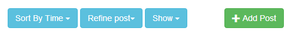</div>
		</div><hr>
		<div id="s43">
			<h4>4.3 Adding a Post</h4>
				<p>A post is an issue or inspection request that you would like submitted to the newsfeed for others to read. To add a post, </p>
				<ol><li>Click the 'Add Post' button found in the newsfeed navigation bar (see <a href="#s42">section 4.2</a> for more information on the Newsfeed Navigation Bar).</li>
				</ol>
				<p>If you have navigated to the newsfeed by pressing the 'Newsfeed' link in the rentmn.gr navigation bar, you now must select the property that you wish to post about. However, if you visited the newsfeed via the 'Property' page, you will be directly taken to the 'Add Post' form.</p>
				<ol start="2"><li>Manually look through the list of properties or use the search function to find the property that you wish to add a new post about</li>
				<li>Select the property by clicking the corresponding radio button, </li>
				<li>Click 'New Post'. You will now be directed to the 'Add Post' page.</li></ol>
				<p>Once at the 'Add Post' page, you are able to define whether the post should be an 'Issue' or 'Inspection'. This can be specified by selecting 'Issue' or 'Inspection' tab under the address of the property. An Issue is a problem that you would like resolved with regards to the property while an Inspection is a request of when you would like to inspect the property.</p>
		</div>
		<div id="s431">
			<h5><strong>4.3.1 Adding Issues</strong></h5>
			<p><i>Issues - When the Issue tab is selected, you must specify which category best fits your issue. An issue is a problem that you would like resolved. The categories available for selection are structural, electrical, plumbing and security. </i></p>
			<ol start="5"><li>Select the appropriate issue category by selecting the corresponding radio button, </li>
			<li>Provide a brief description of the issue that you are currently facing (be sure to provide as much information as possible as this will help others in their response)</li>
			<li>Press 'Add Issue' to post the issue to the newsfeed.</li>
			</ol>
		</div>
		<div id="s432">
			<h5><strong>4.3.2 Requesting Inspections</strong></h5>
			<p><i>Inspection - When the inspection tab is selected, you must specify a time and date that best suits you for an inspection on your property. An Inspection is a process in which an Agent inspects the property for damages</i></p>
			<ol start="5"><li>Provide a brief description and suitable time/date as to when an inspection would best suit you (be sure to provide as much information as possible as this will help others in their response)</li>
			<li>Press 'Add Request' to post the request to the newsfeed</li>
			<li>This post can now be approved or denied by appropriate parties</li>
			</ol>
		</div>
		<hr>
		<div id="s44">
			<h4>4.4 Sorting Newsfeed Items</h4>
			<p>The newsfeed navigation bar (see <a href="#s42">section 4.2</a> for more information on the 'newsfeed Navigation Bar') has various options to allow you to sort newsfeed items. These include:</p>
			<ul><li>Sorting by Time</li>
			<li>Refining posts to only show Issues or Inspections (see <a href="#s431">section 4.3.1</a> for more information on 'Issues' and <a href="#s432">section 4.3.2</a> for more information on 'Inspections' newsfeed post types)</li>
			<li>Show only Open or Closed items (see <a href="#s452">section 4.5.2</a> for more information on 'Open' and 'Closed' items)</li>
			</ul>
		</div>
		<div id="s441">
			<h5><strong>4.4.1 Sorting by Time</strong></h5>
			<p>To sort newsfeed items by time:</p>
			<ol><li>In the newsfeed Navigation bar (see <a href="#s42">section 4.2</a> for more information on the 'newsfeed Navigation Bar'), click the 'Sort by Time' button</li>
			<li>A drop down menu will now be presented. Click the appropriate time sorting option (by Ascending time or Descending time)</li>
			<li>The newsfeed posts will now reflect your selection</li></ol>
		</div>
		<div id="s442">
			<h5><strong>4.4.2 Refining Posts by Issues or Inspections</strong></h5>
			<p>To refine newsfeed items by their category of Issue or Inspection:</p>
			<ol>
			<li>In the Newsfeed Navigation bar (see <a href="#s42">section 4.2</a> for more information on the 'newsfeed Navigation Bar'), click the 'Refine Posts' button</li>
			<li>A drop down menu will now be presented. Click the appropriate setting:</li>
			<ol type="a"><li>'Show Inspections' will show only the inspection requests</li>
			<li>'Show Issues' will show only the property issues</li>
			<li>'Show All' will show both inspection requests and property issues</li>
			</ol>
			<li>The newsfeed posts will now reflect your selection</li>
		</div>
		
		<div id="s443">
			<h5><strong>4.4.3 Show only Open/Closed Newsfeed Posts</strong></h5>
			<p>To show only Open/Closed Newsfeed Posts (see <a href="#s452">section 4.5.2</a> for more information on Open and Closed newsfeed posts):</p>
			<ol><li>In the Newsfeed Navigation bar (see <a href="#s42">section 4.2</a> for more information on the 'newsfeed Navigation Bar'), click the 'Show' button</li>
			<li>A drop down menu will now be presented. Click the appropriate setting:</li>
			<ol type="a"><li>'Show Open' will show only Open newsfeed posts</li>
			<li>'Show Closed' will show only Closed newsfeed posts</li>
			<li>'Show All' will show both open and closed newsfeed posts</li>
			</ol>
			<li>The newsfeed posts will now reflect your selection</li>
			</ol>
		</div>
		<hr >
		
		<div id="s45">
			<h4>4.5 Newsfeed Item Options</h4>
			<p>The 'Newsfeed Item Options' (see in image below) accompany each post in the newsfeed.</p>
			</div>
		<div id="s451">
			<h5><strong>4.5.1 Newsfeed Option Views</strong></h5>
			<div align="center">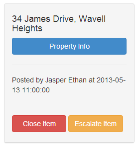</div>
			<p>Tenant View</p>
			<p>When viewing the newsfeed as a tenant, you are able to see:</p>
			<ul><li>Property Address (the address of the Property), </li>
			<li>Property Info (please see <a href="#s6">section 6.0</a> for more information on 'Property Info') and </li>
			<li>Time, date and author of who posted the item.</li>
			</ul>
			<p>Owner View</p>
			<ul><li>Property Address (the address of the Property), </li>
			<li>Property Info (please see <a href="#s6">section 6.0</a> for more information on 'Property Info') and </li>
			<li>Time, date and author of who posted the item.</li>
			<li>Close Item button (see s<a href="#s452">ection 4.5.2</a> for more information on 'Closing Items')</li>
			</ul>
			<p>Agent View</p>
			<ul><li>Property Address (the address of the Property), </li>
			<li>Property Info (please see <a href="#s6">section 6.0</a> for more information on 'Property Info') and </li>
			<li>Time, date and author of who posted the item.</li>
			<li>Close Item button (see <a href="#s452">section 4.5.2</a> for more information on 'Closing Items')</li>
			<li>Escalate Item button (see <a href="#s453">section 4.5.3</a> for more information on 'Escalating Item</li>
			</ul>
		</div>
		
		<div id="s452">
			<h5><strong>4.5.2 Closing Newsfeed Items </strong></h5>
			<p><i>This functionality is only avaliable for Agents and Owners</i></p>
			<p>In rentmn.gr, Owners and Agents are able to close open newsfeed items. A newsfeed item that is closed cannot be edited or added to as a resolution to the issue has been established. To close a newsfeed issue:</p>
			<ol><li>Click 'Close Item' in the Newsfeed Item Options (see <a href="#s451">section 4.5.1</a> for more information on 'Newsfeed Item Options')</li></ol>
		</div>
		
		<div id="s453">
		<h5><strong>Escalating Newsfeed Items </strong></h5>
		<p><i>This functionality is only avaliable for Agents</i></p>
		<p>Agents are able to escalate a newsfeed item. If an Owner has opted to not receive notifications on a certain issue type, an 'Escalate Item' button will appear in the 'Newsfeed Item Options' (see <a href="#s451">section 4.5.1</a> for more information on 'Newsfeed Item Options'). If escalated, the Owner will be notified on the issue even if they have chosen not to be notified by issues of that type. To escalate a newsfeed item:</p>
		<ol><li>Click 'Escalate Item' in the Newsfeed Item Options (see <a href="#s451">section 4.5.1</a> for more information on 'Newsfeed Item Options')</li></ol>
		</div><hr>
<div id="s46">
	<h4>4.6 Viewing and Adding Comments</h4>
	
	<div id="s461">
		<h5><strong>4.6.1 Viewing comments</strong></h5>
		<p>
			Newsfeed items can have comments associated with them. Comments are posted by users in the system to confirm details or to request more information. 
			To view comments for a newsfeed item: <br />
			<ol>
				<li>Click &#39;View Comments&#39;</li>
				<li>A dropdown of all the comments relating to the issue will be presented</li>
			</ol>
	</div>
	<div id="s462">
		<h5><strong>4.6.2 Adding Comments</strong></h5>
		<p>
			Comments can be added to open newsfeed items (see <a href="#s452">section 4.5.2</a> for more information on Closed/Open newsfeed items). These allow you to clarify 
			information or add information to newsfeed items. To add a comment to the newsfeed item:<br />
			<ol>
				<li>Under an open newsfeed item, a input field will be presented, select the &#39;Comment&#39; tab (see image below)</li>
				<div align="center">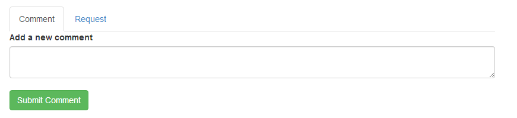</div><br />
				<li>Enter the comment relating to the newsfeed item and press "Submit Comment". Your comment has now been submitted to rentmn.gr.</li>
			</ol>
		</p>
	</div>
	<div id="s463">
		<h5><strong>4.6.3 Requesting Approval</strong></h5>
		<p>
			In rentmn.gr, you are able to request the approval of other users. You may wish to ask for approval on issues such as requesting approval of access of 
			repairman access to the property or requesting approval of inspection times. To request an approval:<br />
			<ol>
				<li>Under the newsfeed item that you wish to request approval for, select the &#39;Request&#39; tab (see figure x below)</li>
				<div align="center">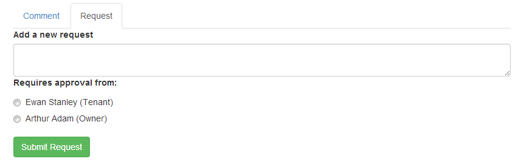</div><br />
				<li>Enter a brief message as to what you are requesting.</li>
				<li>Select the member of rentmn.gr that you require the approval of by selecting the correpsonding radio button to their name.</li>
				<li>Press &#39;Submit Request&#39; to post your request to the newsfeed item.</li>
			</ol>
		</p>
	</div>
	<div id="s464">
		<h5><strong>4.6.4 Approving Requests</strong></h5>
		<p>
			Agents, Tenants and Owners are able to make approval requests (see <a href="#s463">section 4.6.3</a> for more information on &#39;Requesting Approval&#39;). 
			To approve a request a user has submitted to you: <br />
			<ol>
				<li>View the comments of the newsfeed item that you wish to approve (see <a href="#s461">section 4.6.1</a> for more information on viewing newsfeed comments)</li>
				<li>Press the &#39;Approve&#39; button to approve the request or &#39;Deny&#39; button to deny the request</li>
			</ol>
		</p>
	</div>
</div>
<a href="#top">Back to Contents</a>
<hr>

<div id="s5">
	<div class="container">
		<h3>5.0 Financials</h3>
		<hr>
		<div id="s51">
			<h4>5.1 Financial Overview</h4>
			<p>
				The financials pages provides you with a listing detailing all of the financial transactions that have occurred during 
				tenancy/ownership/management of your property. From here, you can also link to your property&#39;s newsfeed and property information.<br />
				<br />
				To get to the financials page of a property, you can go to the property information page (see <a href="#s61">section 6.1</a>) and click the &#39;Property .
				Financials&#39; button or press the &#39;Financial&#39; button in the navigation bar and search for a property (if you are a tenant, clicking 
				financial will result in a direct link to your property financials. The interface for search looks like the following: <br />			
				<div align="center">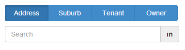</div><br />
			</p>
			<div id="s511">
				<h5><strong>5.1.1 Tenant View</strong></h5>
				<p>
					On the financials page, you can view all of your rent payments you have made. You can search through these payments to find a 
					particular one. Underneath the listing of your payments is an option to directly make a payment through bank transfer. If you 
					have a credit card, you also have the option to set up a recurring payment to your agent.
				</p>
			</div>
			<div id="s512">
				<h5><strong>5.1.2 Owner View</strong></h5>
				<p>
					On the financials page, you can view all of the financial transactions that have taken place on your property. These include 
					rent payments from the tenant, any associated costs on the property such as maintenance costs as well as payouts the agent has made to you.
				</p>
			</div>
			<div id="s513">
				<h5><strong>5.1.3 Agent View</strong></h5>
				<p>
					On the financials page, you can view all of the financial transactions that have taken place on the property that you are managing. 
					These include rent payments the tenant has paid to you, any associated costs on the property such as maintenance costs as well as 
					payouts that you have made to the owner of the property.
				</p>
			</div>
		</div>
	<hr>
	<div id="s52">
		<h4>5.2 Search Bar</h4>
		<p>
			Using this search bar, you can find the financial transaction you are seeking simply by giving a range of dates. If no date is given, 
			results from the current financial year are shown.<br />
			<div align="center">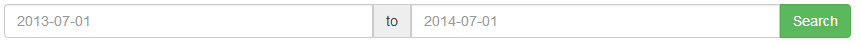</div><br />
			After pressing search, the financial results fulfilling the criteria are listed.
		</p>
	</div>
	<hr>
	<div id="s53">
		<h4>5.3 Making a Payment</h4>
		<p>
			<i>This functionality is for Tenants</i><br />
			If you wish to make a rent payment to your agent, you can either make a manual bank transfer or a recurring credit card payment.
		</p>
		<div id="s531">
			<h5><strong>5.3.1 Bank Transfer</strong></h5>
			<p>
				To make a manual bank transfer, you have to do the following:<br />
				<ol>
					<li>Underneath your rent payments, press the button &#39;Make Payment&#39;.</li>
					<li>On the page you are now on, enter the amount you wish to pay and any comment you wish to make.</li>
					<li>Press save.</li>
				</ol>
				The payment you have just made can now be seen at the bottom of the rent information table.
			</p>
		</div>
		<div id="s532">
			<h5><strong>5.3.2 Recurring Credit Card Payment</strong></h5>
			<p>
				To set-up a recurring credit card payment, you have to do the following:
				<ol>
					<li>At the bottom of the page, under the heading &#39;Automatic Payments&#39;, press &#39;Setup Automatic Payment&#39;.</li>
				Once you are on the add payment page, if you do not already have a credit card attached to your account, continue 
				following these steps. Otherwise, skip to step 6.
					<li>This page gives you a link to go to your account settings to add a credit card. The Account link in the 
					navigation bar can also be used.</li>
					<li>On the account page, press the button that says &#39;Add new card&#39;.</li>
					<li>On this page, enter all your credit card and contact information and press save.</li>
					<li>Return to the financial page of your property and repeat step 1.</li>
					<li>Select the card you wish to use at the top of the page.</li>
					<li>Enter the amount of rent that you wish to set up to pay each fortnight. Your required rent is prefilled.</li>
					<div align="center"></div><br />
					<li>Choose the day of the fortnight you wish to pay on. The blue days are this week, green for next week and press &#39;Add Automatic Payment&#39;.</li>
					<div align="center">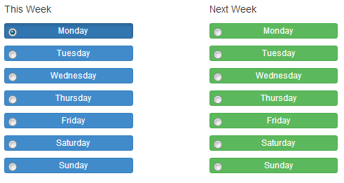</div><br />
				</ol>
		</div>
	</div>
	<hr>
	<div id="s54">
		<h4>5.4 Giving a Payout</h4>
		<p>
			<i>This functionality is for Agents</i><br />
			If you wish you pay an owner, go to the financials page of the property belonging to the owner you wish to payout and do the following:<br />
				<ol>
					<li>At the bottom of the page there is a form under the heading &#39;Owner Payout&#39;. Scroll down to that form.</li>
					<div align="center">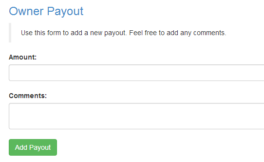</div><br />
					<li>Enter the amount you wish to pay the owner as well as any relevant comment and press &#39;Add Payout&#39;.</li>
				</ol>
			In the financial table at the top of the page, your payment has now been reflected in the table.
		</p>
	</div>
			
	<a href="#top">Back to Contents</a>
	<hr>
</div>

<div id="s6">
	<div class="container">
		<h3>6.0 Property Information</h3>
		<hr>
		<div id="s61">
			<h4>6.1 Property Overview Page</h4>
			<p>
				The property overview page shows all of the relevant information about a chosen property including "Property Details", 
				"Tenancy Details" and "Owner Details". If an owner or tenant has not been assigned to a property, you (if you are an agent) 
				can add them accordingly. To get to this page, you can either come from the newsfeed (see <a href="#s451">section 4.5.1</a>), come from the 
				financials page (see <a href="#s51">section 5.1</a>) or search for the property. To search for a particular property, click "Properties" in 
				the navigation bar and use the search functionality to find the property you are seeking. The interface looks like this: <br />
				<div align="center">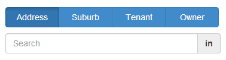</div><br />
				If you are a tenant, clicking "Property" will take you directly to your property&#39;s information. This page also includes links to 
				the financials page as well as that property&#39;s newsfeed as can be seen below: <br />
				<div align="center">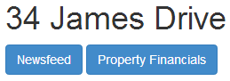</div><br />
				If an owner is added, their name as well as their notification requests are listed. If a tenant is added, their name and tenancy dates are listed.
			</p>
		</div>
		<hr>
		<div id="s62">
			<h4>6.2 Adding a Property </h4>
			<p>
				<i>This functionality is for Agents</i><br />
				If you wish to add a new property, take the following steps: <br />
					<ol>
						<li>Click the &#39;Properties&#39; button in the navigation bar.</li>
						<li>Press the &#39;Add Property&#39; in the top right corner of the page.</li>
						<div align="center">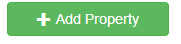</div><br />
						<li>Fill out the form with the property&#39;s information and press &#39;Add Property&#39;.</li>
					</ol>
				The property is now added and can be searched for like any other property.
			</p>
		</div>
		<hr>
		<div id="s63">
			<h4>6.3 Adding an Owner to a Property</h4>
			<p>
				<i>This functionality is for Agents</i><br />
				If there is no owner associated with a property, the following steps can be taken to add one. <br />
					<ol>
						<li>Go the heading &#39;Owner Details&#39;.</li>
						<div align="center">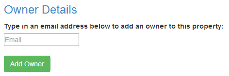</div><br />
						<li>Enter in the owner&#39;s email address and press &#39;Add Owner&#39;. An email is then sent to the 
						potential owner and the following screen is presented.</li>
						<div align="center">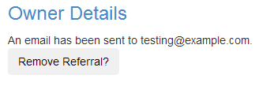</div><br />
					</ol>
			</p>
		</div>
	</div>
	<a href="#top">Back to Contents</a>
	<hr>
</div>


<div id="s7">
	<div class="container">
		<h3>7.0 Account Settings</h3>
		<p>Users are able to edit their account settings. To access your account settings: <br />
			<ol>
				<li>Click the "Account" link in the rentmn.gr navigation bar at the top of the application. </li>
			</ol>
		</p>
		<hr>
		<div id="s71">
			<h4>7.1 Editing Personal Settings</h4>
			<p>To edit personal settings such as your first name, last name and email:
				<ol>
					<li>Press the "Edit" button found under the text fields on the "Account" page. </li>
					<li>Press the "Save" button once you have edited your details appropriately. </li>
				</ol>
			</p>
		</div>
		<hr>
		<div id="s72">
			<h4>7.2 Adding Credit Cards</h4>
			<p>
				<i>This functionality is for Tenants</i><br />
				Please see <a href="#s53">section 5.3</a> for more information on adding credit cards.
			</p>
		</div>
	</div>
	<a href="#top">Back to Contents</a>
</div>


</div>
{include="footer3"}